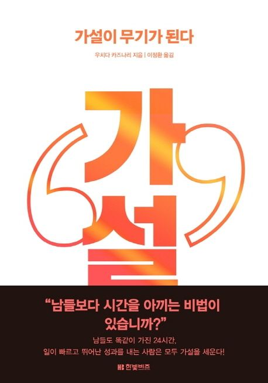

책 서평: 가설이 무기가 된다
일잘러가 되고 싶은 직장인들이 읽어봤으면 하는 책

읽기 전 생각
가설이 어떤 의미에서 무기가 되는가?
가설이 어떻게 남들보다 시간을 아낄 수 있게 해주는가?
읽은 후 생각
일은 엄청나게 하고 있는데 매번 결과물이 미흡한가? 그런 사람들에게 이 책이 답이 될 수 있다.
단순히 가설 설계에 관해서 이야기하는 책이 아닌, 일의 방식에 대해 이야기하는 책이라고 생각한다.
소위 말하는 “일잘러”들은 이 책에서 이야기하는 가설 기반 사고를 따로 배우지 않았더라도, 암묵적으로 이러한 방식으로 일을 하고 있을 것이라 생각한다.
직무 불문 일잘러가 되고 싶은 이 세상 직장인들에게 꼭 필요한 책일 수 있다.
하이라이트
서장: 가설 사고란 무엇인가
모든 정보를 총 망라해서 조사한 뒤에 해답을 내려고 하면 시간이나 자원적인 측면에서 힘들다. (p.18)
가설은 말 그대로 ’가상의 이야기’이며 컨설턴트 세계에서는 ’아직 증명되지 않았지만 가장 정답에 가깝다고 여겨지는 해답이다.
1장: 일단 가설이 있어야 한다
일을 진행할 때는 해답부터 생각하는 발상법이 중요하다. 과제를 모두 분석해서 해답을 내는 것이 아니라 일단 해답을 내놓고 그것을 분석해서 증명하는 것이다. (p.24)
의사결정을 할 때는 이미 존재하는 선택지를 좁혀 주는 정보만이 도움이 된다. (p. 39)
’한정된 정보를 바탕으로 어떻게 가장 적합한 의사결정을 하는가’가 열쇠다. (p.41)
2, 3장
빈 패키지 = 하고싶은, 증명하고싶은 말은 써있으나 구체적인 데이터나 분석은 써있지 않은 슬라이드
스토리 라인 구성 → 이를 뒷받침 하기위한 상세 내용 첨가
내 의견
나도 보통 이런 식으로 발표를 준비하기 때문에 더욱 공감이 갔던 대목
상세 내용 구성보다 스토리 구성이 더욱 중요
부족한 부분들은 상상력, 이미 가지고 있는 내 지식을 동원하여 전체 스토리를 만든다.
여기서, 상상력을 통해 보완하는 것이 곧 가설 사고라 할 수 있음.
내가 가진 사전 지식 또한 곧 상상력에 도움이 되는 부분이므로 이 또한 가설 사고라고 할 수 있지 않을까?.. 아무것도 없는 백지에는 상상조차 불가능할 것
듣는 사람 입장에서 재구성한다
- 같은 주제에 대해 이야기하더라도, 청중의 수준, 행사/프로그램의 목적 등에 따라 스토리 구성과 상세 내용은 달라질 수 있음
발표 방식
두괄식
그래서 결론이 뭐야? 라는 초조감이 없음
결론을 상대가 납득한다면 이유를 설명하므로 시간을 줄일 수 있음
내 의견
프레젠테이션 제목을 결론을 기반으로 작성하면, 청중들의 더 큰 흥미를 끌 수도 있다.
실험설계에서 검정력 분석의 중요성에 대해 이야기할 때 2가지 제목을 떠올렸다.
실험설계에서 검정력 분석의 중요성
실험에 기반한 당신의 A/B Test를 신뢰할 수 없는 이유
결국 본 발표를 통해 하고 싶은 이야기는 “실험설계 시, 검정력 분석을 수행하지 않고 진행한 실험의 경우 결과를 신뢰하기 어려울 수 있다.” 였는데, 전자에는 이 부분이 드러나지 않지만, 후자에는 이 부분이 드러난다.
전자는 결론이 드러나지 않는 미괄식에 가까운 제목, 후자는 결론이 일부 드러나는 두괄식에 가까운 제목으로 볼 수 있다.
블로그 글 작성, 캐주얼한 발표의 경우는 두괄식이 좋다고 본다.
미괄식
“A니까 B, B니까 C, C니까 D, 그러므로 E” 식으로 사고하는 사람이 고객인 경우…
결론은 E다! 라고 했을 때 A, B에 신경쓰여 집중을 못하는 경우가 생김
내 의견: 어떤 것을 발표할 때 미괄식을 쓰는 것이 효과적일까? 논문 발표는 보통 미괄식으로 구성하는 듯하다. 논리적인 Foundation을 step by step으로 쌓아나가는게 중요한 자리에서는 미괄식이 더욱 중요하다고 생각이 듦
좋은 가설의 조건 중 하나: 원인과 이유까지 분석한다
내 의견
온라인 실험에서 가설 설계가 중요한 이유
가설 설계시 우리가 가진 아이디어가 고객에게 어떤 가치를 줄 지 깊이 생각해보아야 한다. (i.e. 미리 원인에 대해 짐작해보는 것)
설계한 가설에 따른 결과가 맞지 않게 나온 경우 Deep-dive analysis가 필요하다. (i.e. 가설 사고에 기반한 생각과 다른 결과가 나온 이유에 관한 깊은 고찰)
예를 들어, Driver metric은 하락했으나 Goal metric은 상승한 경우
또는, Driver metric은 상승했으나 Goal metric은 하락한 경우
논점의 구조화 : 이슈트리 (큰 문제와 작은 문제를 명확하게 구별한다)
4, 5장
곁가지(개별 과제)가 아닌 줄기(전체적인 모습)를 그릴 수 있는 인간이 되자
비즈니스에서 중요한 것
얼마나 많이 일했느냐? (X)
얼마나 정확하게 조사하고 분석했느냐? (X)
얼마나 좋은 정답을 짧은 기간 안에 제시하고, 그것을 즉시 실행에 옮길 수 있느냐? (O)
가설사고를 습관화하면 리더에게 빼놓을 수 없는 앞 일을 읽는 능력이 생긴다
- 선견성과 적은 정보로 의사결정을 하는 판단력, 즉 결단력이 갖춰진다
액션 아이템
망라사고가 아닌 가설 기반 사고 지향
모든 것을 분석해보려는 망라사고를 지양하고, 일단 해답을 내놓고 그것을 분석해서 증명하는 가설기반 사고를 지향하자.
부끄러운 이야기지만 망라사고 방식으로 고객 분석을 접근하여 긴 기간 분석을 진행하다가 길을 잃고 “So What?”이라는 생각만 드는 결과물을 내놓은 적이 있다.
So What? 사고법
- 내가 하는 일이 실질적으로 어떤 인사이트 주고, 어떤 액션을 할 수 있게끔 해주는가?
5 Why 사고법
- “왜?”를 5번 반복하면 진짜 본질을 알 수 있다.
Reuse
Citation
@online{bang2024,
author = {Bang, Taemo},
title = {책 서평: 가설이 무기가 된다},
date = {2024-08-01},
url = {https://taemobang.com/posts/2024-08-01-book-hypothesis/},
langid = {kr}
}